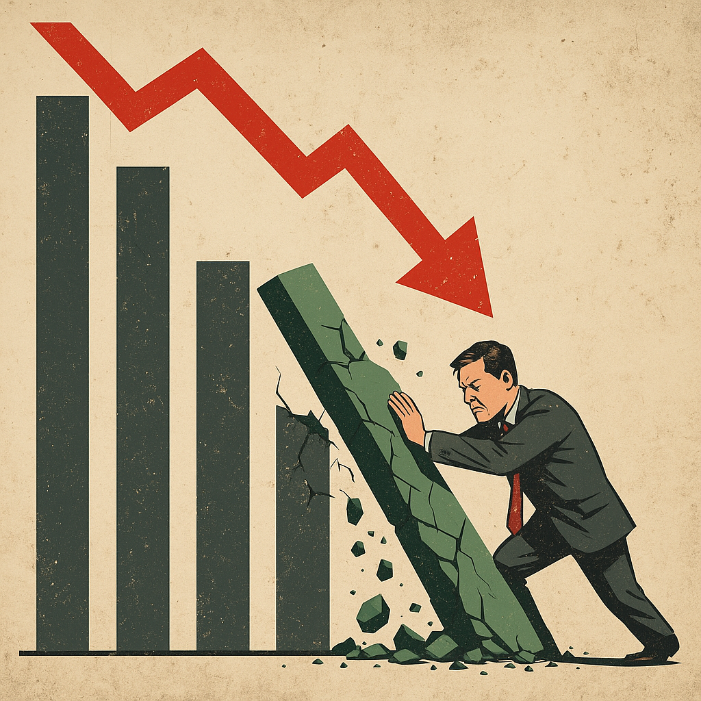

Publicado em 2025-05-04 22:44:25
Quando os números brilham… e o povo continua na sombra
Durante meses, Montenegro e os seus apaniguados repetiram a frase como um troféu:
“Portugal está a crescer acima da média da União Europeia.”
Dita com orgulho. Dita com pompa.
Dita como se esse número, isolado do resto da realidade, fosse a prova definitiva de sucesso.
Mas o tempo — esse contador implacável de verdades — encarregou-se de revelar o que muitos já sabiam:
o crescimento era espuma.
E agora a maré baixou.
Portugal cresceu, sim.
Mas cresceu em quê?
Enquanto isso:
Não é crescimento — é sobrevivência estatística.
Hoje, a economia está em contração.
As famílias não conseguem respirar.
As empresas fecham silenciosamente.
O desemprego real — aquele que se esconde nos contratos a prazo e nos recibos verdes — alastra.
E os salários?
Continuam miseráveis,
ao passo que o custo de vida sobe com arrogância.
Mas os ministros sorriem nos telejornais,
e as agências de comunicação continuam a produzir manchetes simpáticas,
como se o povo vivesse das narrativas e não da realidade.
Portugal não tem uma economia sustentável.
Tem um modelo frágil,
dependente de fatores externos,
sem margem para resistir a choques.
E porquê?
Porque há décadas que os governos governam para os ciclos eleitorais e não para o futuro.
A tão aclamada recuperação era uma ilusão bem montada.
E agora, o país confronta-se com a ressaca — sem energia, sem rumo, e com uma população cada vez mais exausta.
Portugal não precisa de políticos que vendam miragens.
Precisa de estratégia, coragem e verdade.
E disso, tem havido muito pouco.
Augustus Veritas
(Fragmentos do Caos)